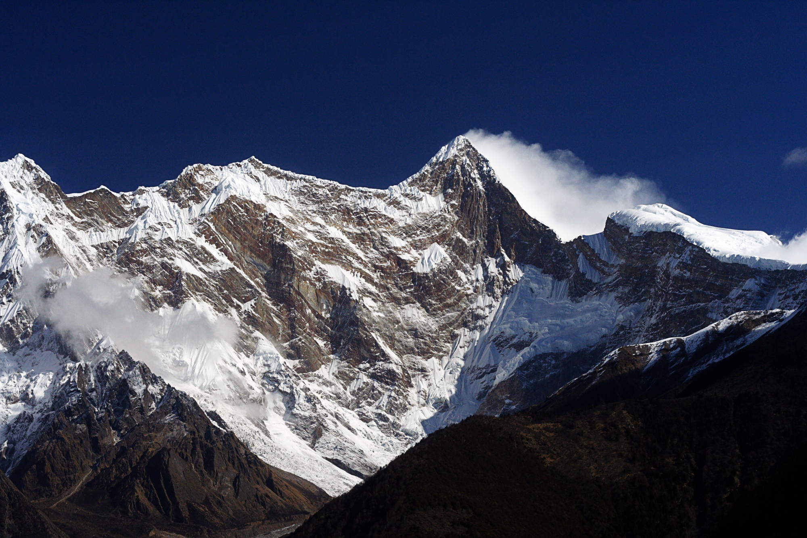

{kind=link}
Jinkai Liu · 中文原作 · 网页标点整理
在花园里，水仙、迎春、春兰、杜鹃花、牡丹、月季，她们同时在春天盛开。和风吹在我的花园内，吹动着花的香气。
Language Book · Second-Pipeline Pilot · Jinkai Liu
Standard Meaning / Identity
南迦巴瓦峰 · Namcha Barwa · གནམ་ལྕགས་འབར་བ། · gnam lcags ’bar ba
Proper-name identity; Featured lexical mapping: Not applicable
Evidence Status: Reviewed · Unrated (entry mapping only). Featured selection is editorial, not an evidence grade. Pending is a valid research result.
Proper-name identity and established public Chinese usage are distinct from verification of a statutory name register; that register remains Pending.
Interpretive · Historical Relation: Not claimed
Competing source-attributed name interpretations are retained in Research. Morpheme interpretation is not proof of a unique naming history; poetic imagery supplies no name-etymology evidence.
Interpretive · Historical Relation: Not claimed
《南迦巴瓦，愿你保留你的容颜》: Chinese = Original Text; English/French = Literary Translation; Tibetan = Translation Draft / Native review pending.
Literary · Historical Relation: Not claimed
Counterinterpretation: Chinese transcription characters do not establish Tibetan semantics. A verified place name does not certify the Tibetan poem. A romantic interpretation is not the unique factual etymology.
Pending: statutory geographic-name register, unique naming history, local pronunciation/transcription review, Tibetan native-speaker poem review, some sources and height discrepancies.
Historical Relation: Not claimed. Literary / cultural / transformation / experimental / proper-name layers are independently scoped; schema validity is not evidence validity.
{
"evidence": {
"Historical": {
"status": "Supported",
"confidence": "Medium",
"summary": {
"en": "Authoritative and institutional sources agree on the place identity and commonly report 7,782 metres, but published explanations of the Tibetan name vary and do not establish one exclusive etymology here.",
"zh-Hans": "权威及机构来源对地点身份一致，并普遍采用海拔 7782 米；但公开资料对藏语名称的解释不一，本词条不据此确立唯一词源。"
},
"items": [
{
"evidence_id": "NAME-NAMCHA-TIBETAN-000",
"claim": {
"en": "Tibetan-language and academic geographic sources record the name as གནམ་ལྕགས་འབར་བ།, Wylie gnam lcags ’bar ba.",
"zh-Hans": "藏文媒体与学术地名资料将名称写作 གནམ་ལྕགས་འབར་བ།，威利转写为 gnam lcags ’bar ba。"
},
"status": "Established",
"confidence": "High",
"source_refs": [
"REF-XZXW-TIBETAN-NAMCHA",
"REF-KYOTO-TIBET-MAP",
"REF-RY-NAMCHA-PLACE"
]
},
{
"evidence_id": "NAME-NAMCHA-LEXICAL-000A",
"claim": {
"en": "Dictionary evidence supports gnam ‘sky,’ gnam lcags ‘meteoric iron / thunderbolt / lightning,’ and ’bar ba ‘blaze, burn, shine,’ making ‘blazing sky-iron / meteor’ or ‘blazing lightning’ the closest lexical analyses.",
"zh-Hans": "词典证据支持 gnam“天空”、gnam lcags“陨铁／霹雳／雷电”、’bar ba“燃烧／闪耀”，因此“燃烧的天铁／陨星”或“燃烧的雷电”是更贴近词面的分析。"
},
"status": "Established",
"confidence": "High",
"source_refs": [
"REF-RY-GNAM",
"REF-RY-GNAM-LCAGS",
"REF-RY-BAR-BA",
"REF-PRINCETON-BUDDHISM-NAMCHA"
]
},
{
"evidence_id": "NAME-NAMCHA-SPEAR-001",
"claim": {
"en": "A Tibet Autonomous Region government page reports the name as meaning ‘a battle spear piercing the blue sky.’",
"zh-Hans": "西藏自治区人民政府页面将名称释为“直刺蓝天的战矛”。"
},
"status": "Supported",
"confidence": "Medium",
"source_refs": [
"REF-XIZANG-WINTER-NAMCHA"
]
},
{
"evidence_id": "NAME-NAMCHA-FIRE-002",
"claim": {
"en": "China Tibet Online reports multiple explanations: ‘lightning burning like fire’ and ‘a long spear piercing the sky’; it connects the latter image with the ‘Battle of Menling’ in the Epic of King Gesar.",
"zh-Hans": "中国西藏网明确称其藏语有多种解释：一为“雷电如火燃烧”，一为“直刺天空的长矛”；后者与《格萨尔王传》“门岭一战”的长矛意象相连。"
},
"status": "Supported",
"confidence": "Medium",
"source_refs": [
"REF-TIBET-NAMCHA-NAME"
]
},
{
"evidence_id": "PLACE-NAMCHA-7782-003",
"claim": {
"en": "The Nyingchi municipal government identifies Namcha Barwa as a 7,782-metre mountain at the eastern end of the Himalayas and the highest mountain in Nyingchi.",
"zh-Hans": "林芝市人民政府资料记载：南迦巴瓦峰海拔 7782 米，位于喜马拉雅山脉东端，是林芝市最高山峰。"
},
"status": "Established",
"confidence": "High",
"source_refs": [
"REF-LINZHI-NAMCHA-GEOGRAPHY"
]
},
{
"evidence_id": "EPITHET-NAMCHA-FATHER-004",
"claim": {
"en": "A Chinese Academy of Sciences science-communication article records ‘father of mountains’ as a Tibetan epithet alongside the spear-like image; it is treated as an epithet, not a literal decomposition of the name.",
"zh-Hans": "中国科学院科普文章在“刺向苍穹的利矛”意象之外，记录其藏语称谓“众山之父”；本词条将其视为称谓，不作为名称字面拆解。"
},
"status": "Supported",
"confidence": "Medium",
"source_refs": [
"REF-CAS-NAMCHA-CANYON"
]
}
],
"source_refs": [
"REF-XZXW-TIBETAN-NAMCHA",
"REF-KYOTO-TIBET-MAP",
"REF-RY-NAMCHA-PLACE",
"REF-RY-GNAM",
"REF-RY-GNAM-LCAGS",
"REF-RY-BAR-BA",
"REF-PRINCETON-BUDDHISM-NAMCHA",
"REF-XIZANG-WINTER-NAMCHA",
"REF-TIBET-NAMCHA-NAME",
"REF-LINZHI-NAMCHA-GEOGRAPHY",
"REF-CAS-NAMCHA-CANYON"
]
},
"Phonetic-Semantic": {
"status": "Not claimed",
"confidence": "High",
"summary": {
"en": "This entry records forms of one proper name; it makes no cross-language phonetic-semantic candidate claim.",
"zh-Hans": "本词条记录同一专名的不同形式，不提出跨语言语音—语义候选。"
},
"items": [],
"source_refs": []
},
"Cognitive": {
"status": "Interpretive",
"confidence": "Medium",
"summary": {
"en": "Cloud veil, youthful face, forest, lake and song are literary images created by the author around the named place.",
"zh-Hans": "云的面纱、青春容颜、森林、湖与歌声是作者围绕该地点专名展开的文学意象。"
},
"items": [],
"source_refs": [
"REF-JL-NAMCHA-RAW"
]
},
"Speculative": {
"status": "Not claimed",
"confidence": "High",
"summary": {
"en": "No new etymological, phonetic or historical-origin hypothesis is proposed.",
"zh-Hans": "不提出新的词源、语音或历史起源假说。"
},
"items": [],
"source_refs": []
}
},
"hypotheses": [],
"experiments": [],
"name_analysis": {
"tibetan_form": "གནམ་ལྕགས་འབར་བ།",
"wylie": "gnam lcags ’bar ba",
"tibetan_pinyin": "Namjagbarwa",
"orthography_note": {
"en": "Tibet Daily's Tibetan-language site, the Rangjung Yeshe place entry and Kyoto University's academic Tibet map use gnam without a final s. Some secondary web sources print གནམས / gnams; this entry adopts the better-attested གནམ / gnam form and records the variant without treating it as primary.",
"zh-Hans": "西藏日报藏文网站、Rangjung Yeshe 地名条目及京都大学学术地图均采用不带词尾 s 的 གནམ / gnam。部分二手网页写作 གནམས / gnams；本条采用证据更充分的 གནམ / gnam，同时记录该异写，不将其作为主写法。"
},
"morphemes": [
{
"form": "གནམ",
"wylie": "gnam",
"meaning": {
"en": "sky, heaven, atmosphere",
"zh-Hans": "天空、天、苍穹"
},
"source_refs": [
"REF-RY-GNAM"
]
},
{
"form": "ལྕགས",
"wylie": "lcags",
"meaning": {
"en": "iron, metal",
"zh-Hans": "铁、金属"
},
"source_refs": [
"REF-RY-GNAM-LCAGS"
]
},
{
"form": "གནམ་ལྕགས",
"wylie": "gnam lcags",
"meaning": {
"en": "sky-iron / meteoric iron; also thunderbolt or lightning",
"zh-Hans": "天铁／陨铁；亦可指霹雳、雷电"
},
"source_refs": [
"REF-RY-GNAM-LCAGS"
]
},
{
"form": "འབར་བ",
"wylie": "’bar ba",
"meaning": {
"en": "to blaze, burn, shine or glow",
"zh-Hans": "燃烧、闪耀、发光"
},
"source_refs": [
"REF-RY-BAR-BA"
]
}
],
"chinese_name_assessment": {
"form": "南迦巴瓦峰",
"type": "phonetic transcription plus geographic classifier",
"assessment": {
"en": "南迦巴瓦 approximately follows the sound sequence Nam-jag-bar-wa; 峰 adds the Chinese geographic classifier ‘peak.’ The individual Chinese character meanings are not a translation of the Tibetan morphemes.",
"zh-Hans": "“南迦巴瓦”大体按 Nam-jag-bar-wa 的音节转写，“峰”补出汉语地理类别。南、迦、巴、瓦各字的汉语字义不用于翻译藏文词素。"
}
},
"translation_assessments": [
{
"chinese": "雷电如火燃烧",
"grade": "closest semantic paraphrase",
"literal_match": "partial-to-strong",
"analysis": {
"en": "Closest among the published Chinese explanations when gnam lcags is read as lightning and ’bar ba as blazing/burning. ‘如火’ is explanatory rather than a separate Tibetan morpheme.",
"zh-Hans": "在公开汉语解释中最接近藏文结构：gnam lcags 可取“雷电”，’bar ba 可取“燃烧／闪耀”。其中“如火”是汉语说明性补充，并非另有一个对应藏文词素。"
}
},
{
"chinese": "燃烧／闪耀的天铁（陨铁）",
"grade": "direct lexical rendering",
"literal_match": "strong",
"analysis": {
"en": "A direct compositional rendering of gnam ‘sky’ + lcags ‘iron/metal’ + ’bar ba ‘blaze/burn/shine.’ Princeton's Dictionary of Buddhism similarly gives ‘Blazing Meteor.’",
"zh-Hans": "按 gnam“天”＋lcags“铁／金属”＋’bar ba“燃烧／闪耀”组合出的较直接译法。《普林斯顿佛教辞典》亦将整词释作“Blazing Meteor（燃烧的流星／陨星）”。"
}
},
{
"chinese": "直刺蓝天的战矛／直刺天空的长矛",
"grade": "cultural-iconic interpretation",
"literal_match": "weak",
"analysis": {
"en": "The Tibetan written form contains no separately identifiable morpheme for spear, battle or piercing. This is best labelled an image associated with the mountain's shape and the Gesar epic tradition, not a literal translation.",
"zh-Hans": "藏文词面中没有可分别对应“长矛／战矛”“刺入”的词素。较合理的身份是结合山形与《格萨尔王传》传统形成的形象化文化解释，而非直译。"
}
},
{
"chinese": "天上掉下来的石头",
"grade": "meteorite-based paraphrase",
"literal_match": "partial",
"analysis": {
"en": "It reflects the ‘sky-iron / meteorite’ sense of gnam lcags, but changes iron/metal to stone and omits ’bar ba ‘blazing.’",
"zh-Hans": "它抓住了 gnam lcags“天铁／陨铁”的来源意象，但把“铁／金属”泛化为“石头”，并省略了 ’bar ba“燃烧／闪耀”。"
}
},
{
"chinese": "众山之父",
"grade": "epithet",
"literal_match": "none",
"analysis": {
"en": "An attested honorific epithet. The written name contains no morpheme meaning mountain, many/all, or father, so it is not a translation of the name.",
"zh-Hans": "这是有资料记录的尊称。藏文名称中没有“山”“众”“父”对应词素，因此不是山名字面翻译。"
}
}
]
},
"related_words": [],
"source": {
"type": "author-provided literary source and related-media link",
"author": "Jinkai Liu",
"status": "Published as literature; factual and name-meaning claims independently sourced",
"normalization": "Web punctuation normalized; 吹動 normalized to 吹动; obvious typo 情青 normalized to 青春; other idiosyncratic wording and emoji preserved.",
"raw_note": "在花园里，水仙，迎春，春兰，杜鹃花、牡丹，月季，她们同时在春天盛开。和风吹在我的花园内，吹動着花的香气。\nRelated media: https://app.runwayml.com/creation/231fbe16-d3ae-45e5-92d5-36c416ec9ed4\n詩歌\n南迦巴瓦，愿你保留你的容颜\n看过南迦巴瓦山的一些照片，很喜欢西藏这个藏在漫漫群山中的秀丽山峰。\n南迦巴瓦山啊，\n你是我的心里的少男少女，\n是我自己心里的透出熏香味的向往，\n还是我自己那少年时代的持续？\n那美丽是就像我看到那青春的照片，\n那是少年时代的情绪的青涩，\n那不正是你的青春似的树🌳与湖吗？\n有愿望的我想保持一颗爱你的心💕，\n因为我的爱你的光芒，\n将使你的情青的面容总是清秀。\n你轻柔的云的面纱，\n你貌似的对我发出尊重的话语，\n可是我却总是希望撕下，\n你的优雅的话语所包围的遮幕，\n总是想看到你的真容，\n在走进你心底的森林的深处，\n我却晓得了你的柔美的如丽水般，\n流淌的心如歌声的，\n在与你温煦话语的对话，\n与你激烈的对抗中，\n我却对你产生了从我的心底，\n流出的一种爱意。"
},
"legacy_migration": {
"version": "second-pipeline-0.1",
"baseline_commit": "f35857436a743045645c1e8f06afb932bbc4db63",
"previous_fields": {
"semantic_associations": [
{
"association_id": "ASSOC-NAMCHA-VEIL-001",
"relation": "CLOUD → VEIL → DESIRE TO SEE THE TRUE FACE",
"status": "Literary",
"is_etymological": false
},
{
"association_id": "ASSOC-NAMCHA-YOUTH-002",
"relation": "MOUNTAIN → YOUTHFUL FACE → TREES AND LAKE",
"status": "Literary",
"is_etymological": false
}
],
"editorial_notes": [
{
"en": "Name-meaning evidence and literary imagery remain strictly separate.",
"zh-Hans": "名称释义证据与文学意象严格分层。"
},
{
"en": "‘Battle spear piercing the blue sky’ is retained as a cultural-iconic interpretation, not a literal morpheme-by-morpheme translation.",
"zh-Hans": "“直刺蓝天的战矛”作为文化—形象解释保留，不标作逐词素直译。"
},
{
"en": "南迦巴瓦 is assessed as phonetic transcription; its Chinese character meanings are not used to infer Tibetan semantics.",
"zh-Hans": "“南迦巴瓦”判定为音译，不以各汉字字义反推藏文语义。"
},
{
"en": "The licensed terrain photograph and the AI-generated literary visualization have separate provenance and evidence status.",
"zh-Hans": "授权地貌实拍与 AI 文学视觉图分别记录来源和证据身份。"
},
{
"en": "The Tibetan poem is a translation draft pending native-speaker review; this status does not affect the independently verified Tibetan proper name.",
"zh-Hans": "藏文诗歌为待母语者审校的翻译初稿；这一状态不影响已经独立核验的藏文专名。"
}
]
},
"previously_absent_fields": [
"standard_translation",
"featured_mapping_status"
]
}
}Literary freedom ≠ historical evidence. Tibetan = Translation Draft / Native review pending.
03
Jinkai Liu · 中文原作 · 网页标点整理
在花园里，水仙、迎春、春兰、杜鹃花、牡丹、月季，她们同时在春天盛开。和风吹在我的花园内，吹动着花的香气。
04
Original Text｜原作
看过南迦巴瓦山的一些照片，很喜欢西藏这个藏在漫漫群山中的秀丽山峰。
南迦巴瓦山啊，
你是我的心里的少男少女，
是我自己心里的透出熏香味的向往，
还是我自己那少年时代的持续？
那美丽是就像我看到那青春的照片，
那是少年时代的情绪的青涩，
那不正是你的青春似的树🌳与湖吗？
有愿望的我想保持一颗爱你的心💕，
因为我的爱你的光芒，
将使你的青春的面容总是清秀。
你轻柔的云的面纱，
你貌似的对我发出尊重的话语，
可是我却总是希望撕下，
你的优雅的话语所包围的遮幕，
总是想看到你的真容，
在走进你心底的森林的深处，
我却晓得了你的柔美的如丽水般，
流淌的心如歌声的，
在与你温煦话语的对话，
与你激烈的对抗中，
我却对你产生了从我的心底，
流出的一种爱意。
Literary Translation｜文学译本
After seeing photographs of Namcha Barwa, I came to love this beautiful Tibetan peak hidden among range upon range of mountains.
O Namcha Barwa,
you are the young men and women within my heart,
the longing in me that breathes the fragrance of incense,
or perhaps the continuation of my own youth.
That beauty is like a photograph of youth before my eyes,
the tender greenness of a young heart—
are those not your youthful trees 🌳 and lake?
I long to keep a heart that loves you 💕,
for the radiance of my love for you
will keep your youthful countenance forever clear.
Your tender veil of cloud,
the reverent words you seem to speak to me—
and yet I am always longing to tear away
the curtain woven around you by your graceful speech,
always longing to behold your true face.
Deep in the forest where I enter your innermost heart,
I come to know your gentleness, lovely as clear water,
your flowing heart, like a song.
In our dialogue of warm words,
in our fierce confrontation,
there rises in me, from the bottom of my heart,
a current of love for you.
Literary Translation｜文学译本
Après avoir vu quelques photographies du Namcha Barwa, j’ai aimé ce beau sommet du Tibet, caché au milieu de chaînes de montagnes sans fin.
Ô Namcha Barwa,
tu es les jeunes hommes et les jeunes femmes au fond de mon cœur,
le désir qui, en moi, exhale un parfum d’encens,
ou peut-être la continuité de ma propre jeunesse.
Ta beauté ressemble à une photographie de la jeunesse sous mes yeux,
à la tendre verdeur des émotions adolescentes —
ne sont-ce pas là tes arbres 🌳 et ton lac, pareils à la jeunesse ?
Je désire garder un cœur qui t’aime 💕,
car la lumière de mon amour pour toi
gardera toujours limpide ton visage de jeunesse.
Ton léger voile de nuages,
les paroles respectueuses que tu sembles m’adresser —
pourtant, je désire toujours déchirer
le rideau dont m’entourent tes paroles pleines de grâce,
je désire toujours contempler ton vrai visage.
Au plus profond de la forêt où j’entre dans le secret de ton cœur,
je découvre ta douceur, belle comme une eau claire,
ton cœur qui s’écoule comme un chant.
Dans le dialogue de tes paroles chaleureuses,
dans l’affrontement ardent avec toi,
naît pourtant en moi, du plus profond de mon cœur,
un courant d’amour pour toi.
Translation Draft｜翻译初稿 · ཡིག་སྒྱུར་ཟིན་བྲིས།
尚待藏语母语者逐句审校；当前版本用于保存语义与诗节对应，不标作正式藏语诗歌。
གནམ་ལྕགས་འབར་བའི་པར་འགའ་ཞིག་མཐོང་རྗེས། བོད་ཀྱི་རི་བོ་རིམ་པའི་ཁྲོད་དུ་སྦས་པའི་རི་བོ་མཛེས་པོ་འདི་ལ་ང་རང་ཧ་ཅང་དགའ།
ཀྱེ། གནམ་ལྕགས་འབར་བའི་རི་བོ།
ཁྱེད་ནི་ངའི་སེམས་ཁོང་གི་གཞོན་ནུ་ཕོ་མོ་ཡིན།
ངའི་སེམས་ཀྱི་སྤོས་དྲི་འཐུལ་བའི་རེ་སྨོན་ཡིན།
ཡང་ན་ངའི་ལང་ཚོའི་དུས་ཀྱི་རྒྱུན་མཐུད་ཡིན་ནམ།
མཛེས་པ་དེ་ནི་ལང་ཚོའི་པར་ཞིག་མཐོང་བ་དང་འདྲ།
དེ་ནི་གཞོན་དུས་ཀྱི་ཚོར་བ་རྗེན་པ་དེ་ཡིན།
དེ་དག་ཁྱེད་ཀྱི་ལང་ཚོ་ལྟ་བུའི་ལྗོན་ཤིང 🌳 དང་མཚོ་མ་ཡིན་ནམ།
རེ་སྨོན་བཅངས་པའི་ངས་ཁྱེད་ལ་བརྩེ་བའི་སེམས 💕 འདི་སྲུང་འདོད།
ཁྱེད་ལ་བཅངས་པའི་ངའི་བརྩེ་བའི་འོད་ཟེར་གྱིས།
ཁྱེད་ཀྱི་ལང་ཚོའི་ཞལ་རས་རྟག་ཏུ་དྭངས་མཛེས་སུ་བྱེད།
ཁྱེད་ཀྱི་འཇམ་མཉེན་གྱི་སྤྲིན་པའི་གདོང་ཁེབས།
ཁྱེད་ཀྱིས་ང་ལ་གུས་པའི་སྐད་ཆ་ཞིག་ཤོད་པ་འདྲ།
འོན་ཀྱང་ངས་རྟག་ཏུ་བཤུ་འདོད་པ་ནི།
ཁྱེད་ཀྱི་མཛེས་ཉམས་ལྡན་པའི་གསུང་གིས་བསྐོར་བའི་ཡོལ་བ་དེ།
ཁྱེད་ཀྱི་ཞལ་རས་ངོ་མ་མཐོང་འདོད།
ཁྱེད་ཀྱི་སེམས་གཏིང་གི་ནགས་ཚལ་ཟབ་སར་བསྐྱོད་སྐབས།
ཆུ་དྭངས་མོ་ལྟ་བུའི་ཁྱེད་ཀྱི་འཇམ་མཛེས་ངས་ཤེས་བྱུང་།
གླུ་དབྱངས་ལྟར་རྒྱུ་བའི་ཁྱེད་ཀྱི་སེམས།
ཁྱེད་ཀྱི་དྲོད་འཇམ་གྱི་གསུང་དང་གླེང་མོལ་བྱེད་སྐབས།
ཁྱེད་དང་ཛ་དྲག་པོར་འཐབ་རྩོད་བྱེད་སྐབས།
ངའི་སེམས་ཀྱི་གཏིང་ནས།
ཁྱེད་ལ་བཅངས་པའི་བརྩེ་བ་ཞིག་རྒྱུན་དུ་བཞུར།
尽量保留作者原声与行序。网页标点作必要整理；“吹動”规范为“吹动”；诗中明显错字“情青的面容”整理为“青春的面容”。未经顺写的独特句式及 emoji 均保留。完整 raw note 保存在统一 Dataset 中。
Provenance only. Earlier wording is retained for comparison; the frozen classifications above govern the current entry. Historical interpretations below are not newly endorsed.
Language Book · Named Entity / Cultural-Literary Entry 013
中文｜English｜Français｜བོད་ཡིག
Wylie: gnam lcags ’bar ba · Tibetan pinyin: Namjagbarwa
Jinkai Liu · Entry v1.3 · Dataset v1.0.5 · Schema v1.0 compatible
南迦巴瓦，愿你保留你的容颜。
01
西藏日报藏文网站、Rangjung Yeshe 地名条目与京都大学学术地图均使用 གནམ་ལྕགས་འབར་བ།。部分二手网页写作 གནམས་ལྕགས་འབར་བ།／gnams lcags ’bar ba；本页采用证据更充分的 gnam 主写法，并把 gnams 记为异写而非主形式。
词典义包括 sky、heaven、atmosphere。
与前词组成 gnam lcags，不宜只把两个词机械拆开。
词典同时记录 meteoric iron、thunderbolt、lightning 等义，因此整名可以有“陨铁”与“雷电”两条相近的理解路径。
可表达 blaze、burn、shine、glow。它不是“刺”或“长矛”。
གནམ་ SKY + ལྕགས་ IRON/METAL + འབར་བ་ BLAZE/SHINE
较直接的词面译法：“燃烧／闪耀的天铁（陨铁）”；若把 gnam lcags 作为整体取“雷电／霹雳”义，则可译作“燃烧／闪耀的雷电”。《普林斯顿佛教辞典》给出的 Blazing Meteor 也支持前一条路径。
| 汉语形式／解释 | 身份判断 | 与藏文词面关系 |
|---|---|---|
| 南迦巴瓦峰 | 音译＋类别词 | “南迦巴瓦”大体随 Nam-jag-bar-wa 的声音转写，“峰”补出地理类别；南、迦、巴、瓦的汉字字义不翻译藏文词素。因此作为地名音译是合适的，但不能从汉字字面解释藏名。 |
| 雷电如火燃烧 | 最接近的语义转述 | gnam lcags 可指雷电，’bar ba 可指燃烧／闪耀，整体较符合。“如火”是汉语说明性补充，并非额外藏文词素。 |
| 燃烧／闪耀的天铁（陨铁） | 直接词素译法 | 逐层对应 gnam“天”＋lcags“铁／金属”＋’bar ba“燃烧／闪耀”，词面符合度高。 |
| 直刺蓝天的战矛／直刺天空的长矛 | 文化—形象解释 | 藏文名称中没有“长矛／战矛”或“刺入”的对应词素。它可与山形及《格萨尔王传》传统相连，但不宜标为直译。 |
| 天上掉下来的石头 | 陨石意象转述 | 抓住 gnam lcags“天铁／陨铁”的来源意象，但把“铁／金属”泛化为“石头”，并省略 ’bar ba“燃烧／闪耀”。 |
| 众山之父 | 尊称／称谓 | 名称本身没有“山”“众”“父”的对应词素；可作为有来源的文化称谓，不是山名翻译。 |
Conclusion · 结论： “南迦巴瓦峰”作为音译地名成立；“雷电如火燃烧”与“燃烧／闪耀的天铁（陨铁）”最接近藏文语义结构；“直刺天空的长矛”是有来源的史诗化形象解释，不是逐词直译；“众山之父”是尊称。诗中的容颜、面纱、森林与湖仍只属于文学层。
02

Place · 地点
林芝市人民政府资料将南迦巴瓦峰列为林芝最高山峰，并记载其位于喜马拉雅山脉东端。
Elevation · 海拔
林芝市人民政府、西藏自治区人民政府及中科院相关资料均采用 7782 米。本页据此采用该数值。
Landscape context · 地貌语境
南迦巴瓦峰与雅鲁藏布大峡谷及其大拐弯共同构成这一地区最鲜明的地理景观语境。
05
Name & place evidence · 名称与地点证据
名称释义、海拔与地理位置只依据独立列出的外部来源，并保留来源差异与不确定性。
Authorial literature · 作者文学
花园、香气、青春容颜、云的面纱、森林、湖与爱意属于文学创造；它们不构成名称词源、语音关系或地理事实的证据。
NAMED PLACE → VERIFIED CONTEXT ｜ NAMED PLACE → LITERARY IMAGERY
07